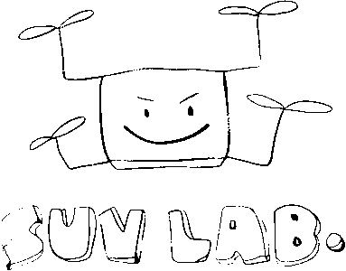

충북대학교 지능로봇공학과

LECTURE SLIDES
K-뉴딜 아카데미 교육과정의 일환으로 진행되는 AI를 위한 Python 강의 자료다. 모듈과 패키지, Matplotlib · NumPy · Pandas, 그리고 ROS2 · PX4 센서 로그 실습까지 8시간 과정이다. 슬라이드의 코드는 브라우저에서 바로 실행된다.
AI를 위한 Python
사업명 K-뉴딜 아카데미 · 총 8시간 (오전 3시간, 오후 5시간) · 강의 충북대학교 지능로봇공학과 문성태 교수 · 슬라이드 7종 + 실습 자료
소개
강의자 소개, 수업 스케쥴, 자료 사용법 · 10분
모듈과 패키지
모듈, 패키지, 라이브러리의 구분과 import 규칙 · 1시간
모듈과 패키지 만들기
패키지 구조, __init__, 공개 API, 진입점 · 1시간
Matplotlib
Figure 와 Axes, 그래프 종류, 서브플롯, 저장 · 1시간
NumPy
다차원 배열, 인덱싱, 브로드캐스팅, 선형대수 · 1.5시간
Pandas
Series 와 DataFrame, 전처리, 그룹 집계, 시계열 · 1.5시간
센서 로그 실습
ROS2 mcap 과 PX4 ulog 배경 설명과 과제 안내 · 2시간
센서 데이터 로그 분석 및 가공
ROS2 mcap 과 PX4 ulog 샘플 로그, Colab 문제 노트북 · 2시간